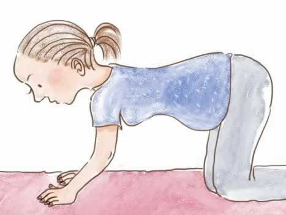
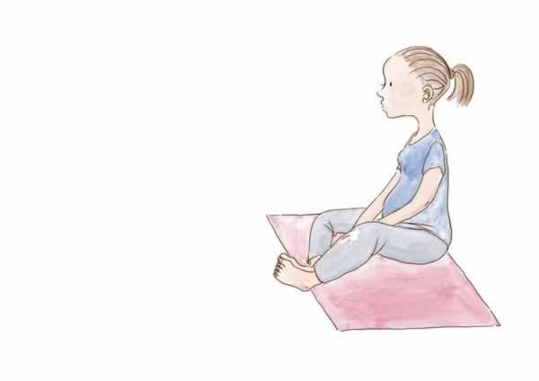

准妈妈的背部保护
到了孕中期，准妈妈可能会因为体重不断增加和孕激素的作用产生背部疼痛的问题，生活中的一些小习惯，也许可以对你的背部起到保护作用：
1. 尽量避免搬挪重物。搬东西这种力气活儿，还是交给准爸爸来负责吧。实在迫不得已，记得尽量把东西贴近身体，需要捡东西时屈膝而不要弯腰，尽量避免扭转腰部。
2. 定期锻炼能减少或缓解你的背部疼痛。
3. 选择舒服的鞋子，走路时最好选择更舒适的平底鞋。
4. 改善你的体态，腰背尽量保持伸直。
你还可以做一做以下两个针对背部的练习：
跪姿：四肢着地，弓起背部，将尾骨缩进。然后再把背部下塌，臀部翘起。伴随平缓的呼吸重复练习这两个动作，能减轻腹部重量对背部的压力，有助于缓解背部或骨盆疼痛。

坐姿：脚掌相对，背靠墙坐直（为了舒适，你也可以在臀部下面垫块毛巾或小垫子）；打开双膝，轻轻往下按压，保持几次呼吸，然后放松。重复练习几次。这个动作除了能帮你改善体态、减轻背部的压力外，还可以帮你打开骨盆，活动臀部关节，为分娩做准备。